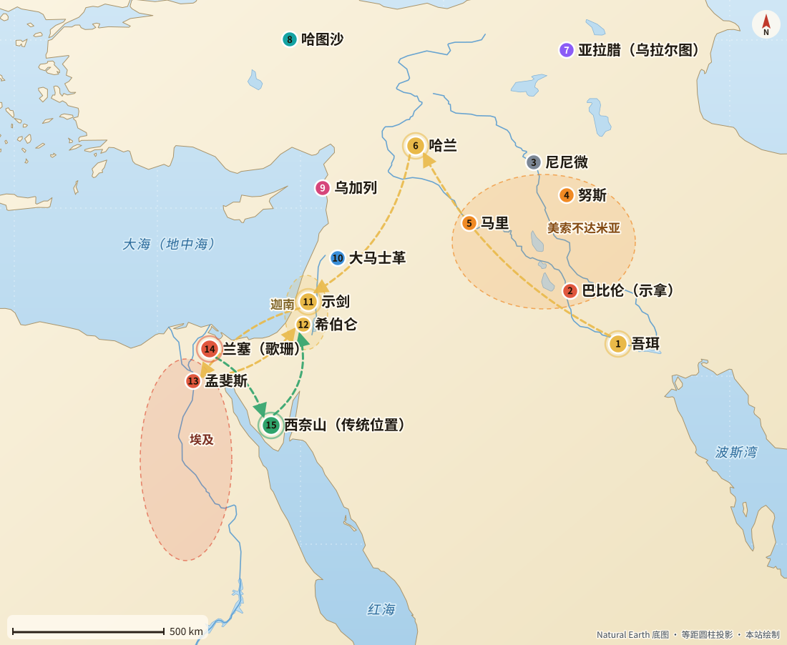
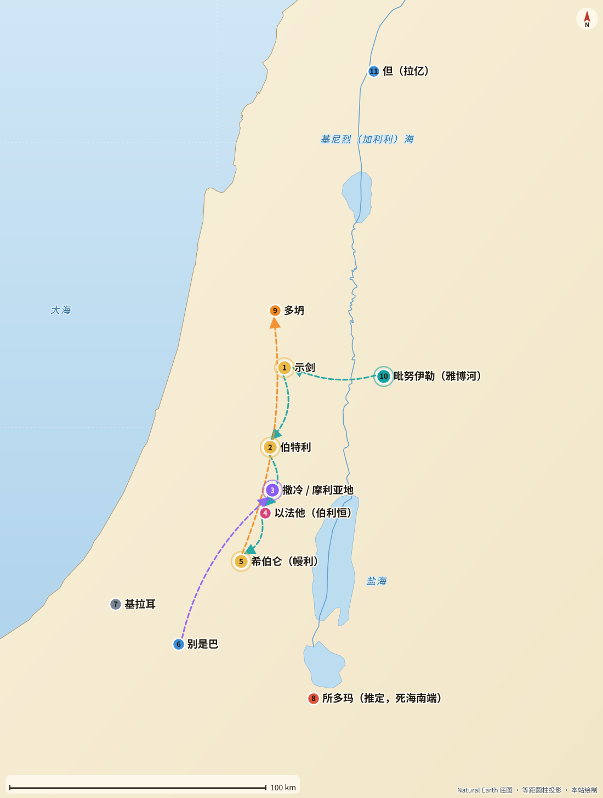
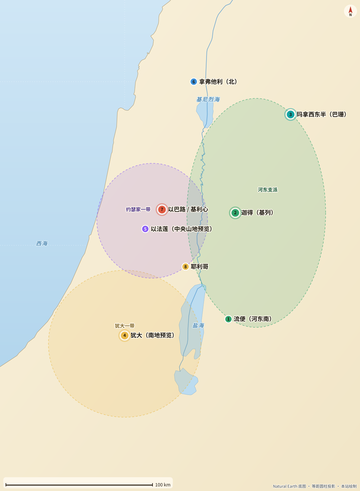

🗺️ 真实地理 · Natural Earth 底图 · 五经总时间线
地图与时间线
五幅基于真实海岸线、河流与湖泊数据绘制的地图，配合五经的总时间线与地理区域表，把故事放回真实的空间与时间。
🗺️⏳🧭
🧭五经的地理舞台01
| 区域 | 地形与气候 | 五经中的事件 | 文化特征 |
|---|
| 美索不达米亚 | 两河流域冲积平原；灌溉农业 | 吾珥、哈兰；巴别塔（示拿地） | 城邦、塔庙、楔形文字、汉谟拉比法典 |
| 迦南 | 沿海平原、中央山地、约旦裂谷；靠雨水的农业 | 先祖寄居；应许之地 | 城邦、巴力与亚舍拉崇拜 |
| 埃及 | 尼罗河谷与三角洲；依赖年度泛滥 | 约瑟、为奴、十灾 | 法老神权、众神、象形文字、金字塔与神庙 |
| 西奈半岛 | 花岗岩山区与荒漠 | 西奈之约、会幕 | 游牧民（米甸人、亚玛力人） |
| 尼革夫/加低斯 | 半干旱，有绿洲 | 十二探子、旷野漂流 | 商路（香料之路） |
| 外约旦 | 高原；以东、摩押、亚扪 | 西宏、噩、巴兰、摩押平原 | 王道（King’s Highway）、基抹崇拜 |
🧭如何读这些地图00
每组地图有三层，全部可离线使用前两层：
- 情景示意图：手绘讲解图，完全离线，先建立空间观念。
- 概念方位图 + 真实地理底图：按经纬度投影，后者用 Natural Earth 海岸线，无需网络。
- 实时地图：可在 OSM、CARTO 浅/深/Voyager、Esri 卫星/地形/街道、OpenTopoMap、Humanitarian OSM 等底图间切换；某一源瓦片失败会自动换下一源。Leaflet 已自托管，不依赖 CDN。
🗺️古代近东全景：创世记的世界02
古代近东全景：创世记的世界
🎨 古代近东世界情景图（离线示意图，不依赖网络） 古代近东全景：从吾珥到埃及——五经的世界舞台（概念图：按经纬度投影的城市位置，不绘海岸线；编号与真实地图、下方列表一致；箭头为示意方向） 
🗺️ 古代近东全景：从吾珥到埃及——五经的世界舞台🔍 全屏 / 放大查看真实地理底图：Natural Earth（公有领域）海岸线、河流、湖泊，本站本地绘制，无第三方地图服务。金线＝亚伯拉罕的旅程；绿线＝出埃及至应许之地（大方向）。古代地点多为学界通行推定，标“推定/有争议”处尚无定论。
- 1吾珥 Ur · 约前2100
迦勒底的吾珥，亚伯兰的故乡（创11:31）；以月神南纳（Nanna/Sin）的塔庙闻名。 - 2巴比伦（示拿） Babylon · 创10–11
示拿地，巴别塔故事的背景；美索不达米亚的阶梯式塔庙（ziggurat）。 - 3尼尼微 Nineveh · 创10:11
宁录国度的城邑之一，后为亚述大城。 - 4努斯 Nuzi · 前15–14世纪
出土数千块泥板，反映收养、长子权、家神等习俗，可与族长故事对照。 - 5马里 Mari · 前18世纪
幼发拉底河畔古城，出土泥板记载“杀驴立约”等立约习俗和先知现象。 - 6哈兰 Haran · 创11:31–12:4
他拉一家暂居之地；后来利百加、拉结的家乡（创24；29）。 - 7亚拉腊（乌拉尔图） Ararat / Urartu · 创8:4
“亚拉腊山”指亚拉腊（乌拉尔图）一带的山地，方舟停靠处（具体山峰不可考）。 - 8哈图沙 Hattusa · 前14–13世纪
赫人帝国首都；出土的宗主条约格式与出埃及记20–24章、申命记结构相似。 - 9乌加列 Ugarit · 前14–13世纪
出土巴力神话泥板，揭示迦南宗教背景（申命记严禁的拜巴力）。 - 10大马士革 Damascus · 创14:15；15:2
亚伯兰追敌直到大马士革北边；管家以利以谢是大马士革人。 - 11示剑 Shechem · 创12:6–7
亚伯兰进迦南后第一座坛；神在此首次应许“我要把这地赐给你的后裔”。 - 12希伯仑 Hebron · 创13:18；23
幔利橡树；麦比拉洞——族长们的坟地，应许之地的“首付”。 - 13孟斐斯 Memphis · 古王国以来
埃及古都；法老被视为神之子，尼罗河被神化。 - 14兰塞（歌珊） Pi-Ramesses / Goshen · 出1:11；12:37
以色列人被迫建造积货城兰塞；出埃及的起点。 - 15西奈山（传统位置） Jebel Musa · 约前1446
颁布律法、立约之山（出19–24）。位置另有阿拉伯说等，此为传统推定。
进入视野并打开此页后再加载 · 失败将自动切换下一源
🌐 实时地图：古代近东全景：从吾珥到埃及——五经的世界舞台 · 可切换 9 种无需密钥的全球底图（OSM / CARTO / Esri / OpenTopoMap 等）。瓦片需网络；若当前源失败会自动换源。离线请看「情景示意图」与「真实地理底图」。🏺真实背景 · 历史背景
- 三条文明带：两河流域、迦南地中海东岸、尼罗河谷。
- 亚伯兰的蒙召是一次「离开月神之城、走向应许之地」的历史迁徙。
- 哈图沙（赫人条约）、乌加列（巴力神话）为后来律法与禁令提供文化对照。
🌍古代近东文化 · 文化特征
塔庙、楔形文字、城邦王权是美索不达米亚的底色；创世记用同一世界讲完全不同的神观与人观。
🗺️亚伯拉罕的旅程03
亚伯拉罕的旅程
🎨 亚伯拉罕旅程情景图（离线示意图，不依赖网络） 亚伯拉罕的旅程：吾珥 → 哈兰 → 迦南 → 埃及 → 再回迦南（概念图：按经纬度投影的城市位置，不绘海岸线；编号与真实地图、下方列表一致；箭头为示意方向）  🗺️ 亚伯拉罕的旅程：吾珥 → 哈兰 → 迦南 → 埃及 → 再回迦南🔍 全屏 / 放大查看
🗺️ 亚伯拉罕的旅程：吾珥 → 哈兰 → 迦南 → 埃及 → 再回迦南🔍 全屏 / 放大查看真实地理底图：Natural Earth（公有领域）海岸线、河流、湖泊，本站本地绘制，无第三方地图服务。金线＝亚伯兰/亚伯拉罕的主要旅程；紫线＝往摩利亚（创22）。古代地点多为学界通行推定，标“推定/有争议”处尚无定论。
- 1吾珥 Ur · 创11:31
迦勒底的吾珥，亚伯兰故乡。 - 2哈兰 Haran · 创11:31–12:4
他拉一家暂居；后为利百加、拉结家乡。 - 3大马士革 Damascus · 创14:15；15:2
追敌至大马士革北；以利以谢是大马士革人。 - 4示剑 Shechem · 创12:6–7
进迦南第一座坛；应许「这地赐给你的后裔」。 - 5伯特利 Bethel · 创12:8
在伯特利与艾中间支搭帐棚、筑坛。 - 6希伯仑（幔利） Hebron · 创13:18；18；23
橡树下蒙访；麦比拉洞为族长坟地。 - 7别是巴 Beersheba · 创21:31–33
立约之井；呼求耶和华永活神的名。 - 8基拉耳 Gerar · 创20
与亚比米勒（位置推定）。 - 9摩利亚地（撒冷） Moriah / Salem · 创22:2；14:18
献以撒；麦基洗德是撒冷王。 - 10埃及（寄居） Egypt · 创12:10–20
因饥荒下埃及，后又上来。
进入视野并打开此页后再加载 · 失败将自动切换下一源
🌐 实时地图：亚伯拉罕的旅程：吾珥 → 哈兰 → 迦南 → 埃及 → 再回迦南 · 可切换 9 种无需密钥的全球底图（OSM / CARTO / Esri / OpenTopoMap 等）。瓦片需网络；若当前源失败会自动换源。离线请看「情景示意图」与「真实地理底图」。🏺真实背景 · 历史背景
吾珥→哈兰→示剑→埃及→希伯仑/别是巴。麦比拉洞是应许之地的首付。
🌍古代近东文化 · 文化特征
离开父家等于离开月神崇拜圈；「名为大」由神赐予，不由巴别之塔。
🗺️族长时代的迦南04
族长时代的迦南
🎨 古代近东世界情景图（离线示意图，不依赖网络） 族长时代的迦南：示剑、伯特利、希伯仑、别是巴（概念图：按经纬度投影的城市位置，不绘海岸线；编号与真实地图、下方列表一致；箭头为示意方向） 
🗺️ 族长时代的迦南：示剑、伯特利、希伯仑、别是巴🔍 全屏 / 放大查看真实地理底图：Natural Earth（公有领域）海岸线、河流、湖泊，本站本地绘制，无第三方地图服务。青线＝雅各返回迦南（创32–35）；橙线＝约瑟寻找哥哥到多坍（创37）；紫线＝亚伯拉罕往摩利亚（创22，方向示意）。古代地点多为学界通行推定，标“推定/有争议”处尚无定论。
- 1示剑 Shechem · 创12:6；33:18
亚伯兰第一座坛；雅各回迦南后买地支搭帐棚；约瑟的骸骨后来葬于此（书24:32）。 - 2伯特利 Bethel · 创12:8；28；35
雅各梦见天梯：“这里就是神的殿”。后来他回到伯特利还愿、改名以色列。 - 3撒冷 / 摩利亚地 Salem / Moriah · 创14:18；22:2
麦基洗德是撒冷王；亚伯拉罕在摩利亚地献以撒（代下3:1 以摩利亚山为圣殿山）。 - 4以法他（伯利恒） Ephrath / Bethlehem · 创35:19
拉结生便雅悯时死去，葬在以法他路旁。 - 5希伯仑（幔利） Hebron / Mamre · 创13:18；18；23
神与亚伯拉罕在幔利橡树下吃饭说话；麦比拉洞为族长坟地。 - 6别是巴 Beersheba · 创21:31–33；26；46:1
亚伯拉罕立约之井；雅各下埃及前在此献祭，神说“不要害怕”。 - 7基拉耳 Gerar · 创20；26
亚伯拉罕与以撒都在此称妻为妹；与非利士王亚比米勒立约（位置推定）。 - 8所多玛（推定，死海南端） Sodom (?) · 创19
所多玛、蛾摩拉被硫磺与火毁灭；确切位置学界未定，此为常见推定之一。 - 9多坍 Dothan · 创37:17
约瑟被哥哥们卖给米甸（以实玛利）商人。 - 10毗努伊勒（雅博河） Penuel / Jabbok · 创32:22–31
雅各与神摔跤，得名“以色列”。 - 11但（拉亿） Dan / Laish · 创14:14
亚伯兰追赶四王直到但（用后来的地名）。
进入视野并打开此页后再加载 · 失败将自动切换下一源
🌐 实时地图：族长时代的迦南：示剑、伯特利、希伯仑、别是巴 · 可切换 9 种无需密钥的全球底图（OSM / CARTO / Esri / OpenTopoMap 等）。瓦片需网络；若当前源失败会自动换源。离线请看「情景示意图」与「真实地理底图」。🏺真实背景 · 历史背景
示剑、伯特利、希伯仑、别是巴构成族长的「生活轴」。多坍是约瑟被卖之处。
🌍古代近东文化 · 文化特征
迦南是城邦与高地农业，不是空地；应许是「寄居中的产业」。
🗺️约瑟与埃及05
约瑟与埃及
🎨 约瑟故事情景图（离线示意图，不依赖网络） 约瑟下埃及：多坍 → 歌珊 / 孟斐斯一带（概念图：按经纬度投影的城市位置，不绘海岸线；编号与真实地图、下方列表一致；箭头为示意方向）  🗺️ 约瑟下埃及：多坍 → 歌珊 / 孟斐斯一带🔍 全屏 / 放大查看
🗺️ 约瑟下埃及：多坍 → 歌珊 / 孟斐斯一带🔍 全屏 / 放大查看真实地理底图：Natural Earth（公有领域）海岸线、河流、湖泊，本站本地绘制，无第三方地图服务。橙线＝约瑟被卖之路；红线＝商队下埃及；金线＝雅各全家后下。古代地点多为学界通行推定，标“推定/有争议”处尚无定论。
- 1希伯仑 Hebron · 创37:14
雅各打发约瑟去看哥哥们。 - 2多坍 Dothan · 创37:17
约瑟被卖给米甸/以实玛利商人。 - 3别是巴 Beersheba · 创46:1
雅各下埃及前在此献祭。 - 4安城（翁，太阳城） On / Heliopolis · 创41:45
约瑟娶安城祭司波提非拉的女儿。 - 5孟斐斯 Memphis · 古王国以来
埃及古都与行政中心（推定相关）。 - 6歌珊 / 兰塞一带 Goshen / Avaris · 创47:6、11
雅各一家被安置在埃及最好的地。
进入视野并打开此页后再加载 · 失败将自动切换下一源
🌐 实时地图：约瑟下埃及：多坍 → 歌珊 / 孟斐斯一带 · 可切换 9 种无需密钥的全球底图（OSM / CARTO / Esri / OpenTopoMap 等）。瓦片需网络；若当前源失败会自动换源。离线请看「情景示意图」与「真实地理底图」。🏺真实背景 · 历史背景
商路从多坍南下三角洲。歌珊适合放牧，也是日后出埃及的出发区。
🌍古代近东文化 · 文化特征
埃及以法老与尼罗为神；约瑟故事宣告年岁在耶和华手中。
🗺️出埃及主路线06
出埃及主路线
🎨 出埃及路线学说比较示意图（离线示意图，不依赖网络） 出埃及路线：兰塞 → 红海 → 西奈 → 加低斯 → 摩押平原（概念图：按经纬度投影的城市位置，不绘海岸线；编号与真实地图、下方列表一致；箭头为示意方向）  🗺️ 出埃及路线：兰塞 → 红海 → 西奈 → 加低斯 → 摩押平原🔍 全屏 / 放大查看
🗺️ 出埃及路线：兰塞 → 红海 → 西奈 → 加低斯 → 摩押平原🔍 全屏 / 放大查看真实地理底图：Natural Earth（公有领域）海岸线、河流、湖泊，本站本地绘制，无第三方地图服务。红线＝出埃及与过海；蓝线＝往西奈；绿线＝往加低斯；灰线＝漂流与绕行（民33；21:4）；地点多为通行推定。古代地点多为学界通行推定，标“推定/有争议”处尚无定论。
- 1兰塞 Rameses (Qantir) · 出12:37
以色列人从兰塞起行（今 Qantir 一带）。 - 2疏割 Succoth (Tell el-Maskhuta) · 出12:37；13:20
第一站；神用云柱火柱引路。 - 3以倘（推定） Etham · 出13:20
在旷野边。 - 4过红海（苇海，地点有争议） Yam Suph crossing (?) · 出14
神分开海水，以色列人走干地；法老的军兵淹没。具体地点有苦湖、苏伊士湾等多说。 - 5玛拉 Marah · 出15:23–25
苦水变甜：“我耶和华是医治你的”。 - 6以琳 Elim · 出15:27
十二股水泉、七十棵棕树。 - 7汛的旷野 Wilderness of Sin · 出16
降吗哪与鹌鹑；开始守安息日的操练。 - 8利非订 Rephidim · 出17
击石出水（玛撒、米利巴）；摩西举手，以色列胜亚玛力。 - 9西奈山（传统：穆萨山） Jebel Musa · 出19–民10
颁布十诫、立约、建造会幕，停留约 11 个月。 - 10加低斯巴尼亚 Kadesh-barnea · 民13–14；20
十二探子回报；百姓不信，被罚漂流 40 年；米利暗死于此。 - 11以旬迦别 Ezion-geber · 民33:35–36；申2:8
漂流途中的一站，亚喀巴湾北端。 - 12何珥山（推定） Mount Hor (?) · 民20:22–29
亚伦死于此山，以利亚撒接续大祭司职分。 - 13尼波山 / 摩押平原 Mount Nebo / Plains of Moab · 民22–申34
巴兰事件、第二次数点、申命记讲论；摩西死于尼波山。 - 14耶利哥 Jericho · 书2–6
约旦河对岸第一座城；进迦南的门户。
进入视野并打开此页后再加载 · 失败将自动切换下一源
🌐 实时地图：出埃及路线：兰塞 → 红海 → 西奈 → 加低斯 → 摩押平原 · 可切换 9 种无需密钥的全球底图（OSM / CARTO / Esri / OpenTopoMap 等）。瓦片需网络；若当前源失败会自动换源。离线请看「情景示意图」与「真实地理底图」。🏺真实背景 · 历史背景
兰塞出发，过苇海，南下西奈，再北上加低斯，终到摩押平原。
🌍古代近东文化 · 文化特征
十灾针对埃及诸神；逾越节把「救赎」做成可吃、可记念的礼仪。
🗺️出埃及路线诸说07
出埃及路线诸说
🎨 出埃及路线学说比较示意图（离线示意图，不依赖网络） 出埃及路线诸说：传统南线、北线说、米甸/阿拉伯说（概念图：按经纬度投影的城市位置，不绘海岸线；编号与真实地图、下方列表一致；箭头为示意方向）  🗺️ 出埃及路线诸说：传统南线、北线说、米甸/阿拉伯说🔍 全屏 / 放大查看
🗺️ 出埃及路线诸说：传统南线、北线说、米甸/阿拉伯说🔍 全屏 / 放大查看真实地理底图：Natural Earth（公有领域）海岸线、河流、湖泊，本站本地绘制，无第三方地图服务。绿线＝传统南线（本站默认）；橙线＝北线说方向；紫线＝过亚喀巴湾至拉兹山说。均为推定。古代地点多为学界通行推定，标“推定/有争议”处尚无定论。
- 1兰塞 Rameses · 出12:37
出埃及起点。 - 2过海（苦湖/苏伊士一带，传统推定） Yam Suph (?) · 出14
传统南线常把过海放在苦湖或苏伊士湾北端。 - 3巴达维尔湖（北线说推定） Lake Bardawil (?) · 学说
北线说把苇海与地中海沿岸潟湖相联系（有争议）。 - 4西奈山（传统：穆萨山） Jebel Musa · 出19
传统南线的立约之山。 - 5拉兹山（阿拉伯说推定） Jebel al-Lawz (?) · 学说
部分人主张西奈在米甸/阿拉伯半岛（有争议，非主流学术共识）。 - 6加低斯巴尼亚 Kadesh-barnea · 民13
南地绿洲，探子出发之地。 - 7摩押平原 / 尼波山 Nebo / Moab · 民22–申34
旅程终点前的营地。
进入视野并打开此页后再加载 · 失败将自动切换下一源
🌐 实时地图：出埃及路线诸说：传统南线、北线说、米甸/阿拉伯说 · 可切换 9 种无需密钥的全球底图（OSM / CARTO / Esri / OpenTopoMap 等）。瓦片需网络；若当前源失败会自动换源。离线请看「情景示意图」与「真实地理底图」。🏺真实背景 · 历史背景
绿：传统南线（默认）。橙：北线说。紫：阿拉伯/拉兹山说。皆为推定。
🌍古代近东文化 · 文化特征
出13:17 已排除「非利士地的路」。坐标之争不能压过「耶和华拯救」。
🗺️会幕与十二支派安营08
会幕与十二支派安营
🎨 会幕与十二支派安营示意图（离线示意图，不依赖网络）
🏺真实背景 · 历史背景
民2–3：会幕居中，利未人护卫，犹大营居东领头。云柱定行止。
🌍古代近东文化 · 文化特征
近东王帐居中；以色列的王是住在会幕中的耶和华。
🗺️旷野漂流与加低斯09
旷野漂流与加低斯
🎨 旷野漂流与加低斯示意图（离线示意图，不依赖网络） 旷野漂流与加低斯：从西奈到绕行以东（概念图：按经纬度投影的城市位置，不绘海岸线；编号与真实地图、下方列表一致；箭头为示意方向）  🗺️ 旷野漂流与加低斯：从西奈到绕行以东🔍 全屏 / 放大查看
🗺️ 旷野漂流与加低斯：从西奈到绕行以东🔍 全屏 / 放大查看真实地理底图：Natural Earth（公有领域）海岸线、河流、湖泊，本站本地绘制，无第三方地图服务。绿线＝离开西奈到加低斯；金线＝探子；灰线＝漂流与绕行。古代地点多为学界通行推定，标“推定/有争议”处尚无定论。
- 1西奈山（传统） Jebel Musa · 民10
第二年二月二十日离开。 - 2加低斯巴尼亚 Kadesh-barnea · 民13–14；20
不信的枢纽；米利暗死于此。 - 3以实各谷 / 希伯仑 Eshcol / Hebron · 民13:22–24
探子砍葡萄的地方。 - 4以旬迦别 Ezion-geber · 民33:35
亚喀巴湾北端的一站。 - 5何珥山（推定） Mount Hor (?) · 民20
亚伦去世处。 - 6铜蛇（普嫩附近，推定） Punon (?) · 民21:4–9
火蛇与铜蛇。
进入视野并打开此页后再加载 · 失败将自动切换下一源
🌐 实时地图：旷野漂流与加低斯：从西奈到绕行以东 · 可切换 9 种无需密钥的全球底图（OSM / CARTO / Esri / OpenTopoMap 等）。瓦片需网络；若当前源失败会自动换源。离线请看「情景示意图」与「真实地理底图」。🏺真实背景 · 历史背景
加低斯是不信的枢纽。申1:2 记从何烈山经过西珥山到加低斯巴尼亚有十一天路程。
🌍古代近东文化 · 文化特征
旷野是试验与谦卑的学堂（申8），也是商路与游牧区。
🗺️外约旦征服与摩押平原10
外约旦征服与摩押平原
🎨 外约旦征服示意图（离线示意图，不依赖网络） 外约旦征服与摩押平原（概念图：按经纬度投影的城市位置，不绘海岸线；编号与真实地图、下方列表一致；箭头为示意方向）  🗺️ 外约旦征服与摩押平原🔍 全屏 / 放大查看
🗺️ 外约旦征服与摩押平原🔍 全屏 / 放大查看真实地理底图：Natural Earth（公有领域）海岸线、河流、湖泊，本站本地绘制，无第三方地图服务。青线＝击败西宏与噩；粉线＝下到摩押平原安营。古代地点多为学界通行推定，标“推定/有争议”处尚无定论。
- 1亚嫩河 Arnon · 民21:13
摩押与亚摩利人的界河。 - 2希实本 Heshbon · 民21:21–31
亚摩利王西宏的京城。 - 3以得来 Edrei · 民21:33–35
巴珊王噩被击败。 - 4摩押平原 / 什亭 Shittim · 民22–36
巴兰、巴力毗珥、第二次核点。 - 5代尔阿拉（巴兰铭文） Deir Alla · 约前8世纪
出土「比珥的儿子巴兰」铭文。 - 6尼波山 Mount Nebo · 申34
摩西观望应许之地。 - 7耶利哥 Jericho · 民22:1
河对岸的门户。
进入视野并打开此页后再加载 · 失败将自动切换下一源
🌐 实时地图：外约旦征服与摩押平原 · 可切换 9 种无需密钥的全球底图（OSM / CARTO / Esri / OpenTopoMap 等）。瓦片需网络；若当前源失败会自动换源。离线请看「情景示意图」与「真实地理底图」。🏺真实背景 · 历史背景
亚嫩河、希实本、以得来、什亭、尼波山。巴兰铭文是旁证。
🌍古代近东文化 · 文化特征
基抹是摩押之神；巴兰只能说出神要说的话。
🗺️毗斯迦山顶的眺望11
毗斯迦山顶的眺望
🎨 外约旦征服示意图（离线示意图，不依赖网络） 申命记 34 章：摩西在毗斯迦山顶所看见的应许之地（概念图：按经纬度投影的城市位置，不绘海岸线；编号与真实地图、下方列表一致；箭头为示意方向）  🗺️ 申命记 34 章：摩西在毗斯迦山顶所看见的应许之地🔍 全屏 / 放大查看
🗺️ 申命记 34 章：摩西在毗斯迦山顶所看见的应许之地🔍 全屏 / 放大查看真实地理底图：Natural Earth（公有领域）海岸线、河流、湖泊，本站本地绘制，无第三方地图服务。三条虚线示意申34:1–3 中摩西从毗斯迦山顶向北、西、南的远眺。古代地点多为学界通行推定，标“推定/有争议”处尚无定论。
- 1尼波山 · 毗斯迦山顶 Mount Nebo / Pisgah · 申34:1
摩西登山观看全地，死在摩押地，“只是到今日没有人知道他的坟墓”（申34:6）。 - 2摩押平原 Plains of Moab · 申1:1–5
摩西在此向新一代讲论律法（申命记的“讲台”）。 - 3耶利哥（棕树城） Jericho · 申34:3
“耶利哥平原，就是棕树城”。 - 4但 Dan · 申34:1
“基列全地直到但”——向北。 - 5拿弗他利 Naphtali · 申34:2
北方加利利一带。 - 6以巴路山 / 基利心山 Ebal / Gerizim · 申11:29；27
进迦南后在两山宣读祝福与咒诅（书8:30–35）。 - 7犹大地 · 直到西海 Judah to the Western Sea · 申34:2
“犹大全地直到西海”。 - 8南地（尼革夫） Negev · 申34:3
南方旷野。 - 9琐珥（推定） Zoar · 申34:3
“直到琐珥”，死海东南（推定）。 - 10基列 Gilead · 申34:1
约旦河东的山地，后归迦得、流便与玛拿西半支派（申3:12–17）。
进入视野并打开此页后再加载 · 失败将自动切换下一源
🌐 实时地图：申命记 34 章：摩西在毗斯迦山顶所看见的应许之地 · 可切换 9 种无需密钥的全球底图（OSM / CARTO / Esri / OpenTopoMap 等）。瓦片需网络；若当前源失败会自动换源。离线请看「情景示意图」与「真实地理底图」。🏺真实背景 · 历史背景
申34 按北南西描述视野。摩西看见却不进去。
🌍古代近东文化 · 文化特征
不是君王记功碑，而是仆人的终局，指向更大的那位先知。
🗺️支派地业预览12
支派地业预览
🎨 十二支派地业预览示意图（离线示意图，不依赖网络） 支派地业预览：河东先得，河西待进（民32；34；申3）（概念图：按经纬度投影的城市位置，不绘海岸线；编号与真实地图、下方列表一致；箭头为示意方向）

🗺️ 支派地业预览：河东先得，河西待进（民32；34；申3）🔍 全屏 / 放大查看真实地理底图：Natural Earth（公有领域）海岸线、河流、湖泊，本站本地绘制，无第三方地图服务。色块为示意分区，精确边界属于约书亚记；本图是五经末尾的「预览」。古代地点多为学界通行推定，标“推定/有争议”处尚无定论。
- 1流便（河东南） Reuben · 民32
河东南部高原。 - 2迦得（基列） Gad · 民32
基列地。 - 3玛拿西东半（巴珊） E. Manasseh · 民32；申3
巴珊。 - 4犹大（南地预览） Judah · 民34
河南部，后为犹大。 - 5以法莲（中央山地预览） Ephraim · 民34
中央山地。 - 6拿弗他利（北） Naphtali · 民34
北方加利利一带。 - 7以巴路 / 基利心 Ebal / Gerizim · 申27
祝福与咒诅之山。 - 8耶利哥 Jericho ·
进迦南门户。
进入视野并打开此页后再加载 · 失败将自动切换下一源
🌐 实时地图：支派地业预览：河东先得，河西待进（民32；34；申3） · 可切换 9 种无需密钥的全球底图（OSM / CARTO / Esri / OpenTopoMap 等）。瓦片需网络；若当前源失败会自动换源。离线请看「情景示意图」与「真实地理底图」。🏺真实背景 · 历史背景
河东先得（民32），河西待进（民34）。精确边界在约书亚记。
🌍古代近东文化 · 文化特征
地是起誓所赐的礼物，也可因悖逆失去（申28）。
⏳五经总时间线（早期出埃及说，约数）07
（未注年代）
创造、堕落、洪水、巴别
创1–11
📖 创1–11
约前1445
会幕立起；利未记；离开西奈
📖 出40:17；民10:11
约前1208
美尼普塔石碑提到「以色列」
圣经之外的旁证
🧩难点 · 另一种年代
「晚期说」把出埃及放在约前1260年（拉美西斯二世），理由包括出1:11 的「兰塞」城名与考古层位；早期说的理由包括王上6:1「四百八十年」与士11:26「三百年」。本站采用早期说并标示「约」。